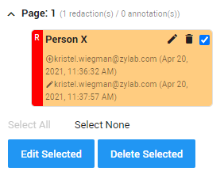

After tagging the document with a Personal data tag and deciding that it is of importance to store the document, it can be stored if there is a legal ground (Purpose) for processing. If such a legal ground is applicable, the data can be stored without having to edit the data in any way. However, in certain situations, it may be useful to pseudonymize the data before storing it.
Pseudonymization of data is the ‘encryption’ of personal data, the replacement of real personal data with a pseudonym. Pseudonymizing personal data can be useful if the user wishes that only authorized personnel can encrypt what the original personal data is behind the pseudonym. Authorized personnel can decode the pseudonym, by keeping a spreadsheet with all the pseudonyms and their original personal data. That way, if any member of the authorized personnel needs to find out what personal data is hidden behind the pseudonym, the person can search the pseudonym in the spreadsheet.
Pseudonymization can also be used for general data protection, like minimization of the risk of exposing personal data during a data breach. Pseudonymization is an easy process when using ZyLAB ONE software, by using the Redaction and Auto Redaction features.
Use the ZyLAB ONE redactions feature to easily protect sensitive, privileged or confidential data in accordance with the GDPR, by hiding personal data. The Redactions feature can be accessed after selecting a document, under the Redactions & Annotations option.
The Redaction Text option can be used to set the pseudonym. For example, if the user wants to pseudonymize the first and last name of a client, a black box can be placed above the name. Then, a pseudonym can be added by typing it in the Redaction Text option. This will result in the name being hidden by a black box with a pseudonym on top.
By clicking on the Appearance Settings, the appearance of the redaction box can be adjusted. This includes the color of the box, as well as the color of the font of the text that will appear in front of the box. All of these settings can be saved by checking the Save these settings as default option. By clicking Done, the selected field will be redacted using the customized settings.
Now the information about the redaction on the right side of the screen is updated with new information about who performed the redaction, as well as the time and date of the redaction.
The option to quickly redact can be useful when redacting multiple personal data on one page of the document. Select Quick Redact under Redact to be able to quickly redact multiple parts of a document. When all personal data has been redacted, press Finish Redact. After this, previously made redactions can be edited. The user can edit the redactions separately, or edit them all at once by selecting the redaction and pressing Edit Selected.
